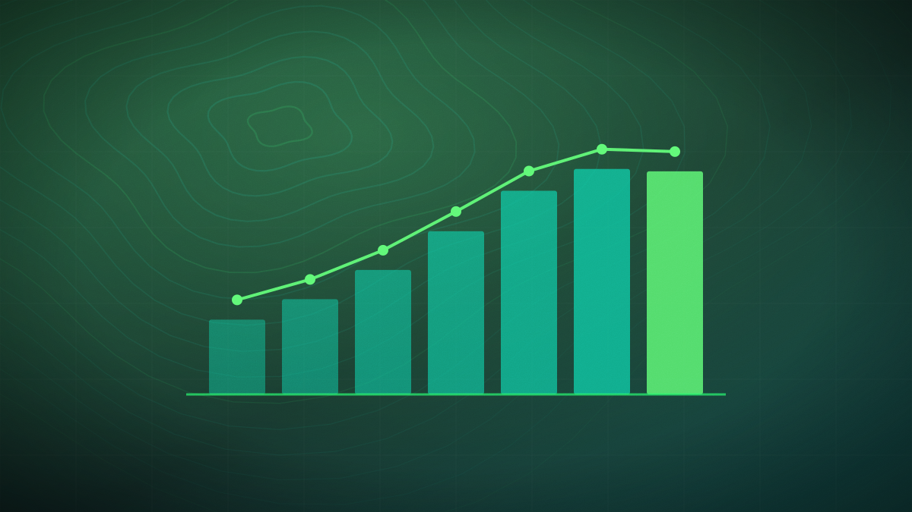

Google signs landmark methane carbon credit deal with India's Mitti Labs
The agreement covers 100,000 hectares of rice farms, leveraging GeoAI and satellite radar to verify a 50% cut in methane emissions.

Original cover art, generated for this story. THE VISSION does not republish third-party press imagery.
- Google has signed a major agreement with Indian startup Mitti Labs to purchase one million carbon credits through 2030.
- The project covers 100,000 hectares of rice farms across Karnataka, Andhra Pradesh, and Telangana.
- Mitti Labs utilizes a GeoAI platform combining satellite radar with field measurements to verify methane reduction.
Google has finalized its largest-ever agricultural carbon offset agreement by partnering with Mitti Labs, a Bengaluru-based climate-tech startup. Under the landmark four-year contract, Google will purchase one million methane-reduction carbon credits through 2030. The initiative is designed to pay smallholder farmers across three major Indian states—Karnataka, Andhra Pradesh, and Telangana—to adopt 'alternate wetting and drying' (AWD) irrigation practices on approximately 100,000 hectares of rice paddies at peak delivery.
Traditional rice cultivation relies on continuously flooded fields, which creates an anaerobic environment where methane-producing bacteria thrive, making global rice farming responsible for approximately 12% of human-driven methane emissions. AWD irrigation involves periodically draining the fields, which has been shown to reduce methane emissions by up to 50% and cut water usage by 40% without compromising crop yields. To verify these reductions, Mitti Labs developed a proprietary GeoAI platform that integrates multi-frequency satellite radar imagery (such as Sentinel-1) with physical ground-sensor telemetry to remotely monitor soil moisture, flooding depth, and crop growth.
The deal is a significant market signal for agricultural carbon offset markets, which have previously struggled with validation and transparency concerns. By leveraging GeoAI to automate the rigorous monitoring and verification process, Mitti Labs provides Google with highly transparent, empirical evidence of carbon abatement. The partnership helps Google offset its own carbon footprint—which rose by 18% in 2025 due to rapid AI data center buildouts—while delivering direct financial incentives to Indian smallholder farmers, who receive the vast majority of the credit sales revenue. Mitti Labs plans to scale its operations to the Philippines in late 2026 and Indonesia in 2027.
This partnership represents a major commercial validation of GeoAI as a trustworthy audit mechanism for environmental markets, proving that satellite-based radar telemetry can automate high-integrity carbon credit verification at scale. For the Indian agricultural sector, it establishes a high-value precedent for redirecting global tech carbon capital directly into the hands of smallholder farmers, showing how AI and space tech can scale climate adaptation.
Will Mitti Labs successfully scale its GeoAI validation platform to the diverse agricultural landscapes of the Philippines and Indonesia by the end of 2027?
Still open. When the paper finds out, it will say so here and on the open questions page — including if it got this wrong.